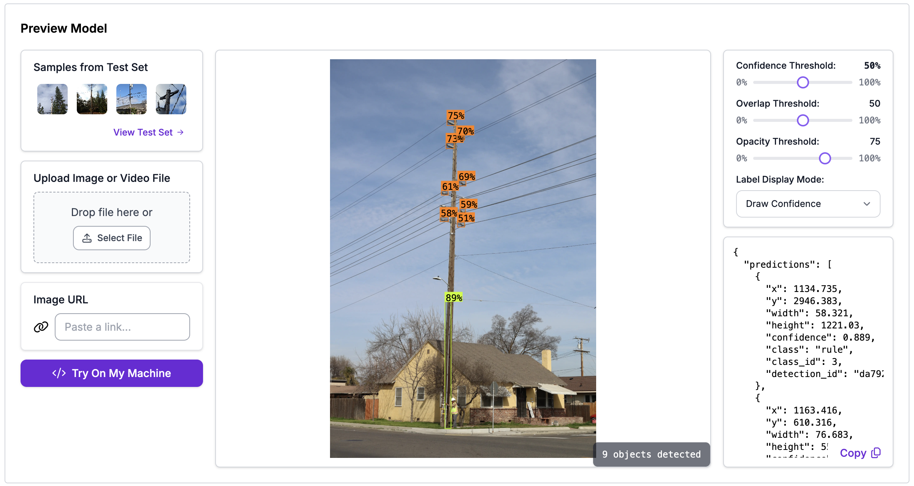
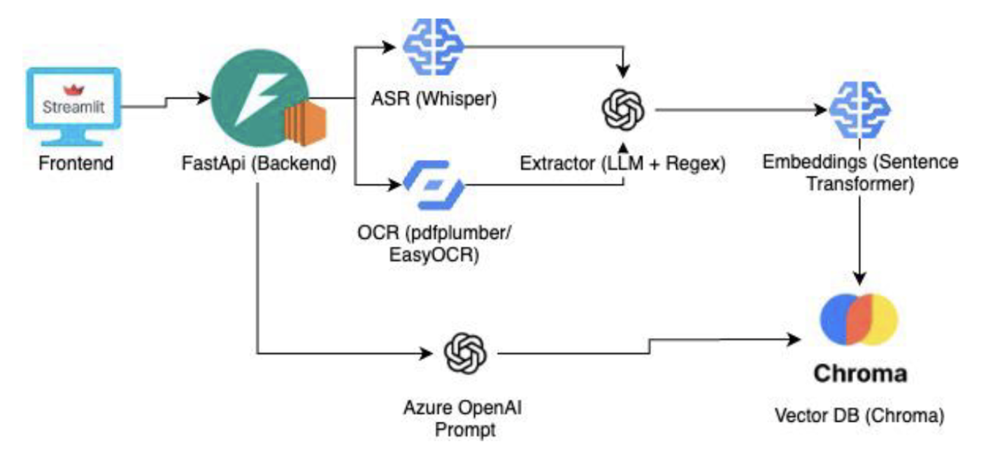
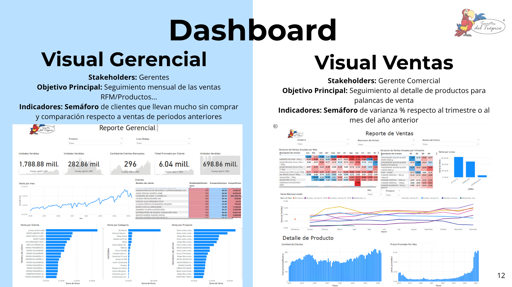
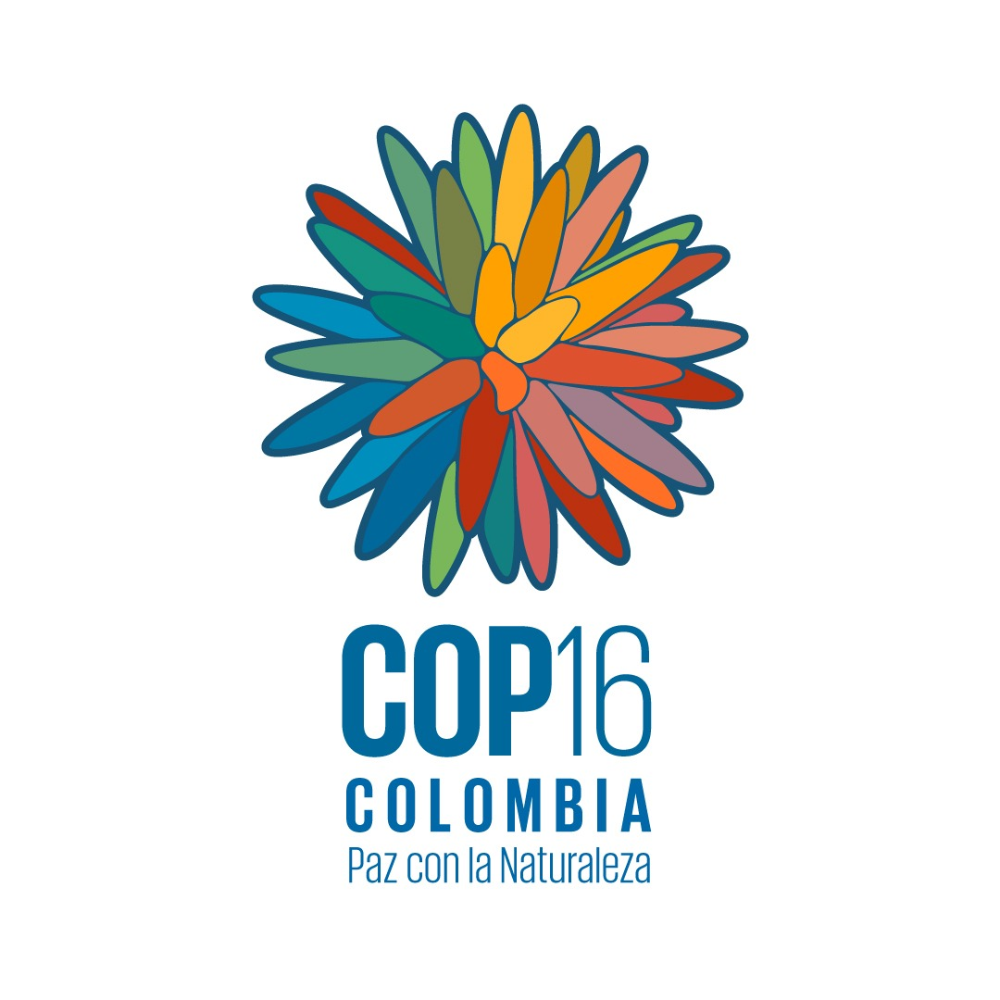
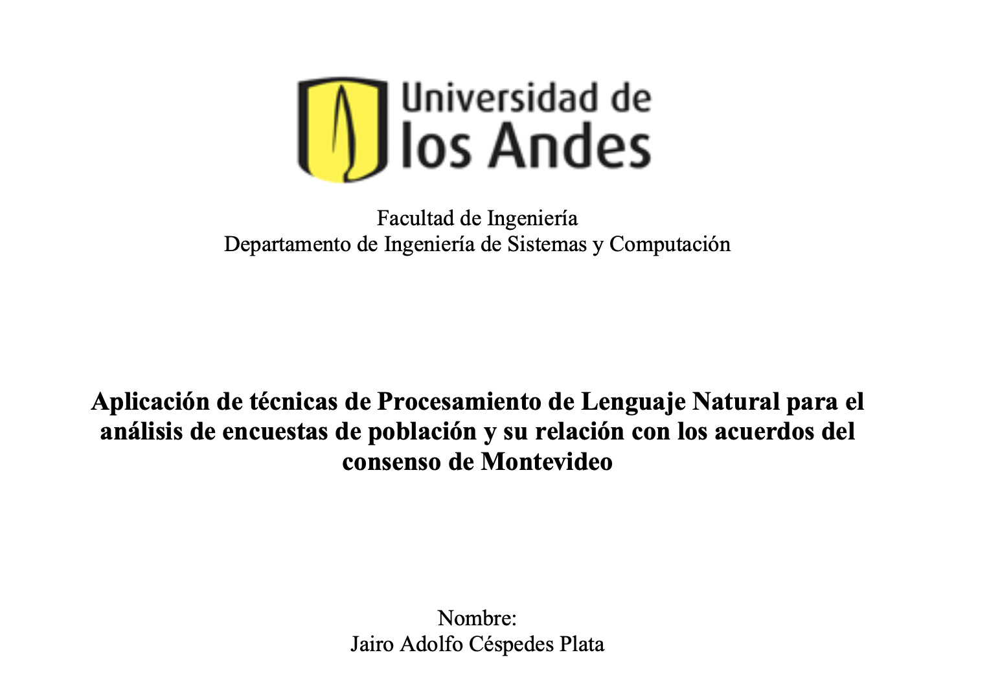
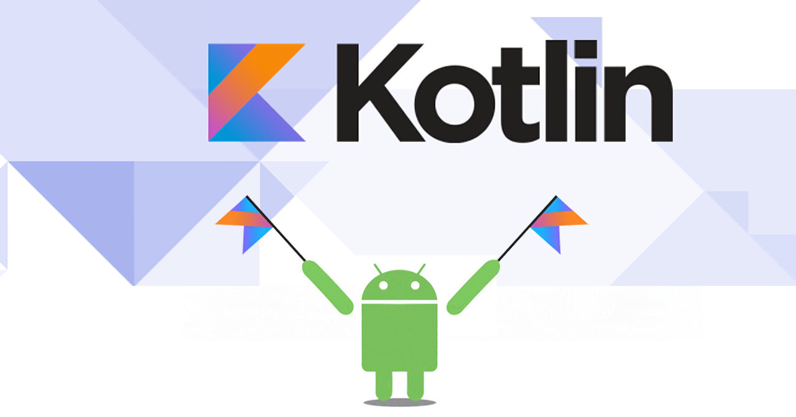

Computer Vision Pipelines – YOLOv8 / DETR + 3D LAZ
Production-oriented CV workflows for electrical infrastructure analysis with AWS Fargate inference and 3D LAZ clustering.
M.S. student in Computer Science – Artificial Intelligence at USC, seeking internship opportunities. I build production-ready AI solutions across machine learning systems, cloud infrastructure, computer vision, LLM workflows, and full-stack applications.

Production-oriented CV workflows for electrical infrastructure analysis with AWS Fargate inference and 3D LAZ clustering.

Multimodal ingestion, embeddings, Chroma vectors, JWT auth, entity extraction, and Streamlit client for clinical data workflows.

GCP pipeline for SAP data extraction, BigQuery processing, forecasting models, and Power BI dashboards.

Official mobile app built with Flutter for iOS/Android, including agenda, content, notifications, and offline-first UX.

Spanish-language NLP pipeline mapping survey responses to policy agreements using BETO embeddings and clustering.

ARCore/Sceneform application with on-device object detection, MVVM architecture, and interactive 3D visualization.
I am an AI & Software Engineer with experience building scalable cloud systems, AI-powered applications, and production-ready machine learning solutions across web, mobile, and data-driven platforms.
I am pursuing an M.S. in Computer Science – Artificial Intelligence at the University of Southern California and seeking internship opportunities where I can contribute to applied AI, ML systems, computer vision, and cloud-based AI products.
Led end-to-end computer vision pipelines using YOLOv8 and DETR, deployed real-time inference systems on AWS Fargate, integrated Django APIs, and developed 3D LAZ point-cloud analytics for infrastructure mapping.
Supported graduate-level students in applying analytics, machine learning, and AI-driven decision-making techniques. Guided LLM-based agents and AI solutions using LangChain, LangGraph, Ollama, and RAG architectures.
Built AI agents using Python and OpenAI APIs for document analysis, information extraction, and proposal automation. Developed Flutter and Kotlin apps for iOS/Android with a focus on usability and performance.
Developed Angular features for the Scheduling Conflict System and supported students in Mobile App Development, Data Structures & Algorithms, and Web Development using Python, Java, and React.
Graduate student focused on AI engineering, ML systems, computer vision, cloud infrastructure, and full-stack AI applications. Currently seeking internship opportunities.
Focused on Machine Learning, Artificial Intelligence, and Cloud Computing. Key courses include Applied Data Science, Deep Learning Analysis, Machine Learning Analysis, Recommendation Systems, Cloud Solutions Development, Big Data, and Business Analytics.
Strong background in computer science, algorithms, software architecture, transactional systems, business intelligence, web/mobile development, and AI systems.
Focused on quantitative analysis, optimization, probability, statistics, financial engineering, decision systems, and business analytics.
Recognition for academic excellence, awarded for graduating within the top 3% historical GPA benchmark.
Recognition for academic excellence, awarded for graduating within the top 3% historical GPA benchmark.
SensorInv: sensor-network proposal for real-time inventory estimation in grain silos, improving control, loss prevention, and safety monitoring.